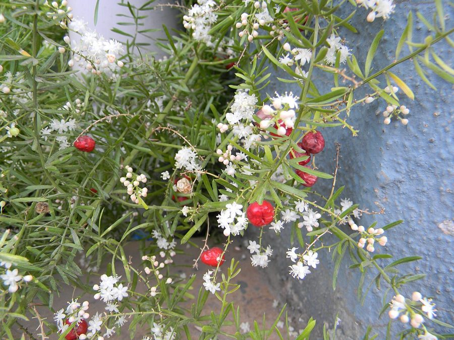

शतावरीShatavari
Asparagus racemosus · Asparagaceae · FLR-0086

- Scientific name
- Asparagus racemosus Willd.
- Family
- Asparagaceae
- Hindi
- शतावरी
- Status here
- native
- IUCN
- not evaluated
When to look कब देखें
Present all year.
शतावरी / Shatavari
Asparagus racemosus Willd. — Asparagaceae
शतावरी (सतवार / शतमूली / वाइल्ड एस्पैरागस) — पूर्वी उत्तर प्रदेश के कांटेदार झाड़ियों, जंगलों की सीमाओं, और घरेलू वाटिकाओं में पाया जाने वाला एक बहुवर्षीय, काठ-नुमा और चढ़ने वाला औषधीय पौधा (woody climbing vine) है। इसकी लंबाई लगभग 1 से 3 मीटर तक होती है। इसकी सबसे बड़ी जैविक पहचान इसके पत्तों के स्थान पर पाई जाने वाली पतली, सुई जैसी हरी संरचनाएं हैं जिन्हें 'क्लैडोड्स' (cladodes / needle-like modified stems) कहा जाता है, जो 2 से 6 के गुच्छों में उगती हैं। इसके तने पर छोटे, पीछे की ओर मुड़े हुए कांटे होते हैं जो इसे झाड़ियों पर चढ़ने में मदद करते हैं। वसंत और शरद ऋतु में इस पर छोटे सफ़ेद, सुगंधित फूल और बाद में पकने पर लाल-काली होने वाली छोटी गोल बेरियाँ आती हैं। शतावरी का सबसे महत्वपूर्ण औषधीय भाग इसकी जमीन के नीचे पाई जाने वाली उंगली जैसी गुच्छेदार जड़ें (tuberous fleshy roots) हैं। एक स्वस्थ पौधे के नीचे 50 से 100 तक सफेद कंद रूपी जड़ें पाई जाती हैं, जिन्हें महिलाओं के स्वास्थ्य, प्रसव के बाद स्तनपान बढ़ाने, और शरीर की रोगप्रतिरोधक क्षमता (rasayana) को बढ़ाने के लिए आयुर्वेद में एक सर्वोत्तम औषधि माना जाता है। जंगली क्षेत्रों में अत्यधिक खनन (overcollection) के कारण इस पौधे पर गंभीर संरक्षण संकट मंडरा रहा है। यह गिलोय (Giloy, FLR-0012) की तरह ही एक चढ़ने वाला महत्वपूर्ण औषधीय बेल है।
Quick Identification त्वरित पहचान
| Feature | Description |
|---|---|
| Plant habit | Woody, scrambling or climbing perennial vine up to 1–3 meters, with sharp, curved thorns on the stems |
| Cladodes | True leaves are reduced to small scales; functional leaves are needle-like cladodes, 10–20 mm long, in clusters of 2–6 |
| Flowers | Small (3–4 mm), star-shaped, pure white, arranged in drooping spikes, possessing a sweet honey fragrance |
| Fruit | Spherical, green berries (5–8 mm), turning bright red or blackish-purple when fully ripe |
| Roots | Fleshy, finger-like, cream-white tuberous roots (50–100 count), clustered together beneath the root crown |
Field tip: Look in dense thorny hedges (Ziziphus or Carissa bushes). Search for woody vines with soft, pine-like needle clusters. Inspect the stems; you will find sharp, downward-pointing prickles. If you dig carefully near the base of the vine, you will find a massive cluster of fleshy, finger-like white tubers.
Morphology आकारिकी
Biometrics (typical measurements of mature plants in the northern Indian plains):
| Measurement | Range |
|---|---|
| Vine length | 1.0–3.0 m |
| Cladode length | 10–20 mm |
| Flower diameter | 3–4 mm |
| Berry diameter | 5–8 mm |
| Tuber count | 50–100 per plant |
| Tuber length | 15–30 cm |
Stem and Thorns: Stems are woody, light green or brown, heavily branched. The spines are sharp, curved, situated at the bases of the leaf scales, aiding both defense and climbing.
Foliage: Cladodes are linear, needle-like, flattened or 3-angled, serving the function of leaves (photosynthesis) while minimizing water loss in dry habitats.
Flowers: Arranged in simple or branched racemes. Each flower has 6 white tepals and yellow anthers, emitting a strong scent that travels in wind.
Fruit and Seeds: A 3-lobed globose berry. The seeds are round, hard, black-brown.
Associated Species / Interactions संबंधित प्रजातियाँ
- Support Ecology: Relies entirely on sturdy, thorny host shrubs like Ber or Babool to climb and display its flowers to pollinators.
- Pollinators: The sweet flowers are visited by honeybees, hoverflies, and butterflies during the day.
- Overcollection threat: Wild harvesting by commercial herbal gatherers often involves digging up the entire root cluster, which kills the plant, causing sharp population declines in native forests.
Pests and Diseases कीट और रोग
- Root Rot: Caused by Fusarium in wet or clay-heavy soils, turning the fleshy tubers into rotten black mass.
- Scale Insects: Small sucking bugs cluster on the needle-like cladodes, causing yellowing.
- Leaf Webber: Caterpillars web the fine cladode clusters together to feed.
Traditional Preparations पारंपरिक औषधीय निर्माण
- Lactation Enhancement in Nursing Mothers → Tuberous Roots → Wash and dry the roots, grind into fine powder, and boil 3–5 g of powder in a cup of milk with sugar → Consume twice daily.
- General Weakness and Vitality Tonic → Tuberous Roots → Mix 3 g of dry root powder with a teaspoon of ghee and warm water → Consume daily in the morning as a rasayana (rejuvenator).
- Acidity and Stomach Ulcers → Tuberous Roots → Boil root powder in water to make a decoction, or mix fresh root juice with milk → Drink 20-30 mL warm before meals.
- Fever and Body Weakness → Tuberous Roots → Mix equal parts Shatavari powder and Giloy stem powder in warm water → Consume 2-3 g twice daily.
- Skin Dryness and Inflammation → Tuberous Roots → Boil root powder in coconut or sesame oil to prepare a medicated oil → Apply topically over dry or irritated skin.
Expected Locally स्थानीय रूप से अपेक्षित
Not a field record. Written from published accounts for eastern Uttar Pradesh. No confirmed local sighting yet — if you have seen it, that is what the atlas needs.
अभी तक स्थानीय पुष्टि नहीं। यह विवरण प्रकाशित स्रोतों से है, किसी अवलोकन से नहीं।
A common plant in school medicinal plots and home herbal borders throughout the Basti district, regularly observed in the Harraiya, Vikramjot, and Basti blocks. Traditional healers (Vaidyas) state that wild Shatavari was once abundant in the dry scrub forest of the district, but has now become scarce due to excessive root digging. Farmers are increasingly encouraged to cultivate Shatavari as a commercial cash crop in sandy fields.
Distribution वितरण
Global range: Widespread across tropical Africa, South Asia (India, Nepal, Sri Lanka), and northern Australia.
In India: Found throughout all plains and tropical scrub forests up to 1,500 meters in the Himalayas.
In Uttar Pradesh: Distributed state-wide in all dry forests, river ravines, and garden zones.
In Basti district / eastern UP: Common in cultivation and home gardens.
Research Questions शोध प्रश्न
Anyone can investigate these | कोई भी इन प्रश्नों की जाँच कर सकता है
- How many fleshy tubers does a 2-year-old cultivated Shatavari plant produce compared to a wild forest plant? — Count and record root yields.
- Do the needle-like cladodes drop during the hot summer winds of May in Basti? — Track foliage drop dates.
- What is the germination rate of Shatavari seeds collected from bright red berries versus dry black-purple ones? — Conduct seed trials.
- How many honeybees visit a flowering Shatavari vine in a 10-minute window at noon? — Record pollinator counts.
- Does the population density of wild Shatavari drop near villages where commercial root collection is unmanaged? / क्या उन गाँवों के निकट जंगली शतावरी की आबादी कम हो जाती है जहाँ इसके कंदों के व्यावसायिक दोहन पर कोई नियंत्रण नहीं है? — Survey and compare wild counts in different forest zones.
Similar Species मिलती-जुलती प्रजातियाँ
| Species | How to tell apart | comparison |
|---|---|---|
| Giloy (Tinospora cordifolia) | Climber; has large, green heart-shaped leaves; lacks spines or needle-like cladodes; stems are succulent | गिलोय — दिल के आकार के पत्ते, चिकने कांटे-रहित तने |
| Giant Dodder (Cuscuta reflexa) | Parasitic vine; lacks green color completely; stems are yellow-orange; no leaves or cladodes | अमरबेल — पीली परजीवी लता, काँटों का अभाव |
| Ashwagandha (Withania somnifera) | Erect woody shrub; leaves are large, velvety; fruit is a red berry inside a balloon calyx; no spines | अश्वगंधा — सीधे खड़े पौधे, मखमली पत्ते, बेल नहीं |
Field rule: Scrambling woody vine with sharp curved spines, needle-like green cladodes in clusters of 2–6, small sweet-scented star-like white flowers, and a massive underground cluster of fleshy finger-like white tubers, is Shatavari.
Taxonomy & Classification वर्गीकरण
Original description. Carl Ludwig Willdenow described the Shatavari as Asparagus racemosus in 1799 in his edition of Species Plantarum (Vol. 2, Part 1, p. 152). The type locality was listed as India. The genus name Asparagus is the ancient Greek name for the plant. The specific name racemosus is Latin for bearing flowers in racemes (clusters).
Subspecies. Monotypic — no subspecies are currently recognised in the main index.
Family and order placement. Placed in the order Asparagales, family Asparagaceae (asparagus family), subfamily Asparagoideae.
Phylogenetic notes. Asparagus racemosus belongs to a specialized clade of dioecious or hermaphroditic geophytes that have evolved cladodes (modified stems) to adapt to drought-prone tropical scrublands, replacing true leaves to conserve water.
IUCN status rationale. Not evaluated (NE) by the IUCN Red List. However, local national conservation agencies in India categorize it as vulnerable in the wild due to destructive root-digging.
Photo Gallery फोटो गैलरी
References संदर्भ
- Willdenow, C. L. (1799). Species Plantarum. Fourth Edition. G.C. Nauk, Berlin, Vol. 2, Part 1, p. 152. [original description]
- Brandis, D. (1906). Indian Trees. Archibald Constable & Co., London.
- Kirtikar, K. R. & Basu, B. D. (1935). Indian Medicinal Plants. Vol. IV. Lalit Mohan Basu, Allahabad.
- Sharma, P. V. (1996). Classical Uses of Important Medicinal Plants (focuses on Shatavari rasayana properties). Chaukhambha Visvabharti, Varanasi.
- World Flora Online (2024). Asparagus racemosus taxon details.
- GBIF Occurrence Data — Asparagus racemosus, India (2010–2025).
Source file: species/flora/medicinal/shatavari.md